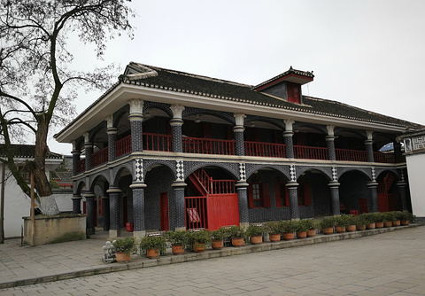

由于第五次反"围剿"失败，中央红军主力被迫实行战略转移。 从江西瑞金出发，没有人知道这条路有多长。
湘江战役，红军长征以来最惨烈的一仗。 江水被鲜血染红，三天三夜，阵地反复争夺。

遵义会议，确立了毛泽东在党和红军中的领导地位。 这是党的历史上一个生死攸关的转折点。 从此，红军有了方向。
22名突击队员冒着枪林弹雨，攀着13根铁链冲过泸定桥。 对岸是敌人的机枪和被拆掉桥板的铁索。 脚下是湍急的大渡河。
翻越夹金山时，海拔4000米，空气稀薄，许多战士坐下去就再也没站起来。 松潘草地，一望无际的沼泽，每一步都可能是最后一步。 没有粮食，就吃草根、煮皮带。
红一、红二、红四方面军在甘肃会宁胜利会师。 两年，两万五千里，翻越18座山脉，渡过24条河流。 出发时86000人，到达时7000人。